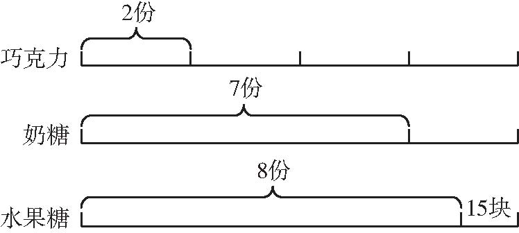
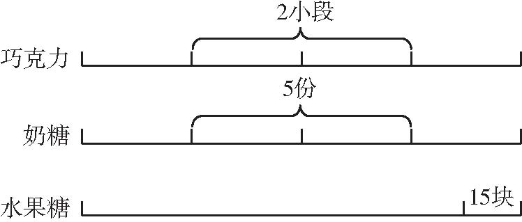

把若干物体平均分给一定数量的对象，并不是每次都能正好分完．如果物体还有剩余，就叫盈；如果物体不够分，少了，叫亏．凡是研究盈和亏这一类算法的应用题就叫盈亏问题．有些应用题，从表面看起来似乎不是盈亏问题，但认真分析，将条件适当地转化后，可变成盈亏问题进行解答．
【解题技巧】
分辨题目类型，找出盈亏的量，灵活运用公式．
【基本公式】
一盈一尽类：盈数÷两次分得之差＝人数
一亏一尽类：亏数÷两次分得之差＝人数
一盈一亏类：（盈＋亏）÷两次分得之差＝人数
两次皆盈类（大盈-小盈）÷两次分得之差＝人数
两次皆亏类（大亏-小亏）÷两次分得之差＝人数
（第六届“迎春杯”初赛）老师把一些苹果分给小朋友，如果每个人分1个，则多8个苹果；如果每个人分2个，则少2个苹果．一共有小朋友多少个？
【答案】 10个．
【解析】 份数＝（盈＋亏）÷两次分配数的差，这里的份数即小朋友的个数，可得（8＋2）÷（2-1）＝10（个）．
【举一反三1】
幼儿园老师给小朋友分梨子，如果每人分4个，则多9个；如果每人分5个，则少6个．问幼儿园有多少个小朋友？共有多少个梨子？
（第四届“希望杯”初赛）过年了，小刚想将自己的光盘整理一下．若每盒5片，则有一盒少了1片；若每盒6片，则恰好少用一个盒子．小刚的光盘一共有几片？
【答案】 24片．
【解析】 由两次皆亏类型的公式得（6-1）÷（6-5）＝5（盒），5×5-1＝24（片）．
【举一反三2】
学校将一批铅笔奖给三好学生．如果每人奖9支，缺45支；如果每人奖7支，则缺7支．三好学生有多少人？铅笔有多少支？
（第五届“走美杯”初赛）猴王带领一群猴子去摘桃．下午收工后，猴王开始分配．若大猴分5个，小猴分3个，猴王可留10个．若大猴、小猴都分4个，猴王能留下20个．在这群猴子中，大猴（不包括猴王）比小猴多___只．
【答案】 10．
【解析】 根据题意，在大猴分5个，小猴分3个后，每只大猴都拿出1个，分给每只小猴1个后，还剩下20-10＝10（个），所以大猴比小猴多10只．
【举一反三3】
幼儿园给获奖的小朋友发糖，如果每人发6块就少12块，如果每人发9块就少24块，总共有多少块糖？
（2009年“数学解题能力展示”中年级组复赛）幼儿园老师买了同样多的巧克力、奶糖和水果糖．她发给每个小朋友2块巧克力、7块奶糖和8块水果糖．发完后清点一下，水果糖还剩15块，而巧克力恰好是奶糖的3倍．那么共有___个小朋友．
【答案】 10．
【解析】 画如下线段图分析．

从奶糖的7份中取2份，那么剩下的5份就和上面的2小段相等，如下图所示．

那么2小段和5份都看成10份量，那么总量就相当于19份量，水果糖中原有的8份就是现在的16份，则剩下的15块水果糖就占有3份，则1份就是5块，给小朋友们分出去的水果糖数量是16×5＝80（块），小朋友的人数是80÷8＝10（个）．
【举一反三4】
王老师给小朋友分苹果和橘子，苹果数是橘子数的2倍．橘子每人分3个，多4个；苹果每人分7个，少5个．则有多少个小朋友？多少个苹果？
1．五年级（2）班老师给学生发笔记本，如果每人发3本，还剩下31本，如果每人发5本，就差15本，这个班有学生多少人？共有多少本笔记本？
2．某校乒乓球队有若干名学生，如果少一个女生，增加一个男生，则男生为总数的一半；如果少一个男生，增加一个女生，则男生为女生人数的一半，乒乓球队共有学生多少人？
3．操场上有两堆货物，如果甲堆增加80吨，乙堆增加25吨，则两堆货物一样重；若甲、乙两堆各运走5吨，剩下的乙堆正好是甲堆的3倍．两堆货物一共有多少吨？
4．妈妈在菜市场买猪肉，买5斤猪肉剩余5元钱，买6斤差3元钱，猪肉每斤多少钱？妈妈带了多少钱？
5．幼儿园老师将一筐苹果分给小朋友．如果分给大班的学生每人5个，余10个；如果分给小班的学生每人8个，缺2个．已知大班比小班多3个学生，这筐苹果有多少个？
6．工地上工人打桩，如果每人打5个桩，还有3个桩没人打，如果其中2个人各打4个桩，其余的人各打6个桩，就正好打完，工地上有工人多少个？共需要打多少个桩？